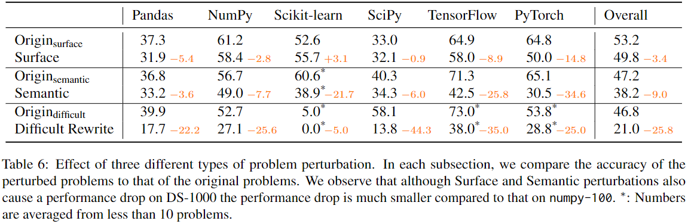
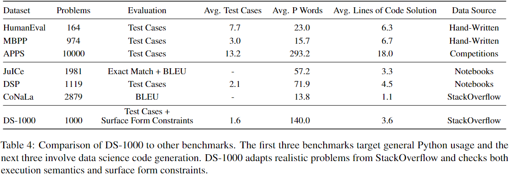

The rapid advancement of techniques in large language models (LLMs) for processing tabular data necessitates improvements in evaluation benchmarks. However, most of existing table benchmarks offer evaluation from a singular task-based perspective, failing to provide a comprehensive and meticulous assessment of the LLMs' table-related capabilities. To address this gap, we introduce TableBench, a capability-based benchmark tailored to evaluate the performance of LLMs on tabular data. Our framework intricately outlines 10 essential capabilities required from the point a model receives a table-related input to the generation of an output, with each capability tested across 6 table formats. We evaluate 20 models using TableBench and observe that GPT-4 and GPT-4o achieve the highest scores, while phi3-small outperform other open-source models of similar scale. Drawing from our evaluation, we present a series of valuable insights, which can serve as a pivotal reference for future table-related LLM research.
For questions from StackOverflow, we equipped them with prompts, test cases, and evaluation functions and called them Origin. To prevent models simply recalling the solutions seen during pre-training, we have perturbed the questions in two ways: surface perturbations and semantic perturbations. To make DS-1000 more challenging, we additionally introduced Difficult Rewrite.
Here is the performance of Codex-davinci-002 on DS-1000.
Here are more prompts, you can copy them and run the models on the playground of OpenAI.
Instruction: Given a table, please answer the question based on the table.
Do NOT add any explanations. Return the final result as the JSON format:
{'prediction': '<answer>'}, such as {'prediction': 'China'}.
{Example}
Table:
| A1,Book Administrator Listing | B1, | C1, | D1, | E1, | F1, |
|:--------------------------------|:-----------|:---------------------|:-----------|:--------------------|:----------|
| A2, | B2, | C2, | D2, | E2, | F2, |
| A3,Company | B3,Group | C3,Report To | D3, | E3, | F3, |
| A4,ENA | B4,Gas | C4,Jeff Gossett | D4, | E4, | F4, |
| A5, | B5, | C5, | D5, | E5, | F5, |
| A6,Name | B6,Book ID | C6,Primary / Back-up | D6,Phone | E6,Manual or System | F6,System |
| A7,Connie Sutton | B7,ABC | C7,Primary | D7,x3-5686 | E7,System | F7,ERMS |
| A8,Connie Sutton | B8,XYZ | C8,Back-up | D8,x3-5686 | E8,Manual | F8, |
Question: Does this table have a header?
Return the final result as the JSON format: {'prediction': '<answer>'}
Answer:
DS-1000 contains 1000 problems originating from 451 unique StackOverflow problems. To defend against potential memoriza- tion, more than half of the DS-1000 problems are modified from the original StackOverflow problems; they include 152 surface perturbations, 235 semantic perturbations, and 162 difficult rewrites.
Below are the examples of TableBench in 6 different formats. The initial table representation is a 2d-list, which we convert to other formats.
[
['Rank', 'Lane', 'Name', 'Nationality', 'Time', 'Notes'],
[1, 5, 'Eskender Mustafaiev', 'Ukraine', '38.77', 'Q'],
[2, 4, 'David Smetanine', 'France', '38.97', 'Q'],
[3, 3, 'Kyunghyun Kim', 'South Korea', '40.37', 'Q'],
[4, 6, 'Christoffer Lindhe', 'Sweden', '41.52', 'Q'],
[5, 7, 'Arnost Petracek', 'Czech Republic', '43.12', ''],
[6, 2, 'Ronystony Cordeiro da Silva', 'Brazil', '44.22', ''],
[7, 8, 'Grant Patterson', 'Australia', '55.49', ''],
[8, 1, 'Arnulfo Castorena', 'Mexico', '1:03.49', '']
]Table 4 compares DS-1000 to other datasets. Notably, the average of problem words in DS-1000 is much larger compared to other data science related datasets (e.g., DSP and CoNaLa).
More importantly, the problems in DS-1000 represent more diverse and naturalistic intent and context formats that cannot be seen in any other datasets.
Unlike generic Python code generation benchmarks (MBPP and HumanEval), we note that data science code generation benchmarks have fewer test cases since the annotators need to define program inputs with complex objects such as square matrices, classifiers, or dataframes than simple primitives, such as floats or lists.
Nevertheless, even a few test cases suffice for DS-1000 – only 1.8% of the Codex-002-predicted solutions accepted by our evaluation are incorrect.
We thank Noah A. Smith, Tianbao Xie, Shuyang Jiang for their helpful feedback on this work.
@article{Lin2024tablebench,
title={TableBench: A Capability-Based Table Benchmark for Large Language Models},
author={Lin, Yun and He, Xinyi and Zhou, Mengyu and Luo, Yirui and Zhong, Ruiqi and Zettlemoyer, Luke and Yih, Wen-Tau and Fried, Daniel and Wang, Sida and Yu, Tao},
journal={ArXiv},
year={2022},
volume={abs/2211.11501}
}